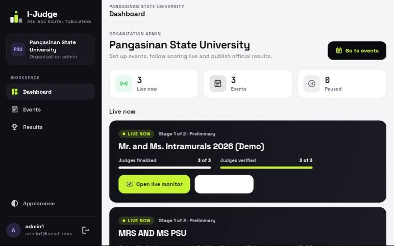
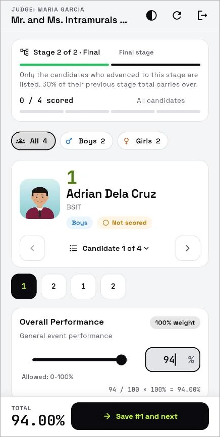
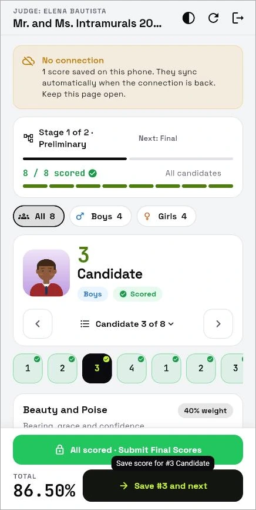
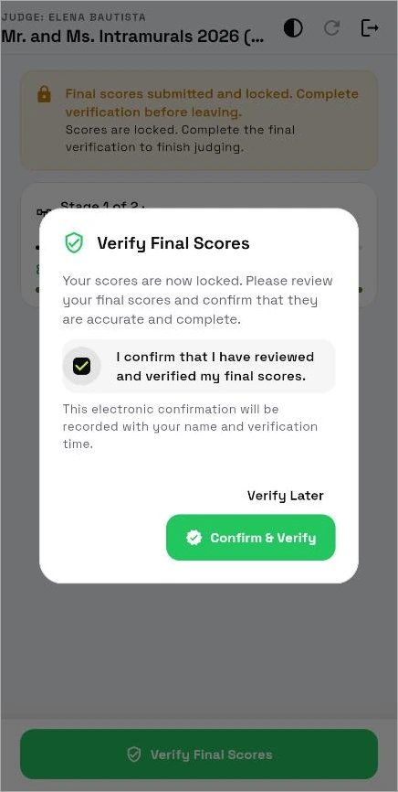
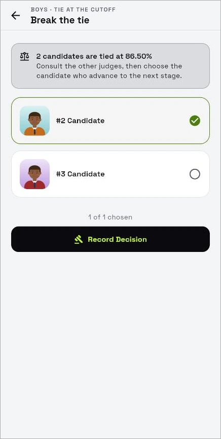
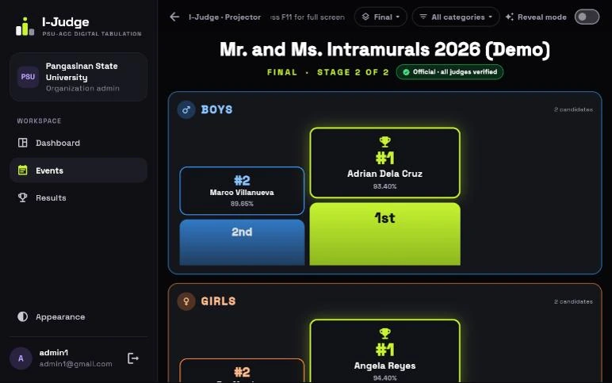

Capstone project · Defended Nov 2026 · My role: Developer
I-Judge
Digital Tabulation Application of Pangasinan State University – Alaminos City Campus
A real-time judging and tabulation platform for pageants and competitions. Admins set up multi-stage events with weighted criteria, judges score on their phones, rankings update live per category, ties go to the Board's Chairperson, and results are revealed on a projector and printed as a signed official document.
Campus events were tabulated by hand. Paper scoresheets, manual computation, and re-checking meant slow results, errors, and disputes that were hard to settle.
Judges sign in with a QR code and PIN and score per criterion. The database checks every rule, computes weighted totals, ranks candidates live, and prints results only after every judge verifies.
Inside the app
Real screens from I-Judge

Admin dashboard: live events and judge progress at a glance





Projector mode: 3rd, 2nd, 1st place reveal for the audience
Interactive demo · sample data
Run a mini event
A simplified simulation of I-Judge's live flow: score, verify, then reveal the podium.
OFFICIAL · ALL JUDGES VERIFIED
How an event runs
- 01Set upAdmin creates stages, weighted criteria, categories, candidates and the judge list
- 02Judges joinScan a QR code or type the event code, name and 4-digit PIN
- 03ScorePer criterion and per candidate, saved even with no signal
- 04Rank & resolveLive rankings per category; the Chairperson decides ties
- 05VerifyEvery judge electronically confirms their final scores
- 06Reveal & printProjector podium reveal and a signed official PDF
QR + PIN judge sign-in
No judge accounts. Each judge gets a personal QR code and 4-digit PIN, with attempt limits and a sign-in lock so nobody else can take a judge's seat.
Multi-stage scoring
Preliminary to Final stages, each with its own weighted criteria, top-N advancement per category, and optional carry-over of earlier scores.
Offline-safe scoring
If the signal drops, scores are queued on the phone and re-sent every few seconds. Sends are idempotent, so retries never create duplicates.
Real-time live rankings
Supabase Realtime streams every saved score to the admin's live scoring screen and the projector, ranked per category with the cutoff line.
Chairperson tie-breaks
Ties that matter, at a cutoff or for a podium place, are detected automatically and sent to the Chairperson's phone. The decision is recorded on the printout.
Projector mode
A big-screen results view that reveals 3rd, 2nd, then 1st place for the audience, plus special awards such as "Best in Stage Presence".
Official results PDF
Every stage, ranking, tie-break record and special award, followed by a certification and signature lines for each judge and signatory.
Database-level security
PostgreSQL row-level security and server-side functions enforce the competition rules, so the rules can't be bypassed from the browser.
Blind judging & more
Optional blind judging, judge panels per stage, flexible event types, special awards, and multi-organization admin with an activity log.
Architecture
How it's built
Developed with the SDLC Rapid Application Development (RAD) model. Started on Firebase, then migrated to Supabase for relational data and stronger server-side rules.
Evaluation · ISO/IEC 25010
Rated 4.60 / 5, "Very High"
Acceptability survey of 50 evaluators: IT instructors, student tabulators, LGU executives, and students.